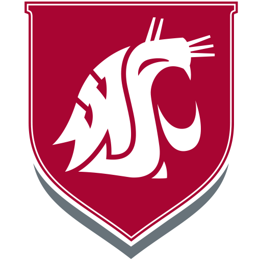
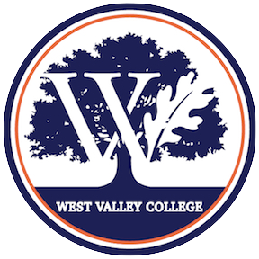
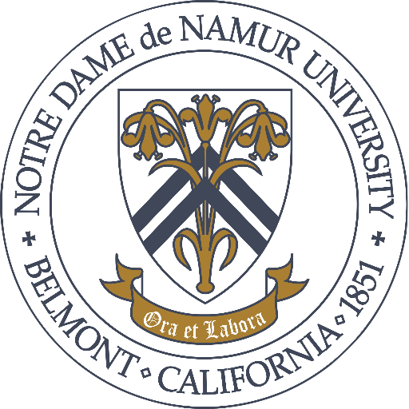

About Me
Hi! My name is Sabrina Slattery and I am a web developer, machine learning enthusiast, and future software engineer.
I recently graduated summa cum laude from Notre Dame de Namur University with a B.S., Computer Science and an excitement
to start my career in tech.
During my undergraduate studies I have become fluent in Python and Java, as well as worked in-depth with web development and mobile app
programming techniques. I have a passion for machine learning, specifically natural language processing (NLP) and deep learning, and
will be pursuing a masters in computational neursocience in the next few years.
Currently, I'm working on an app-based non-profit organization to help Bay Area locals give back to their communities through volunteering.
I'm also looking to join a dynamic, innovative engineering team as a full-time software engineer. Feel free to contact me with any
industry advice, job suggestions, or feedback – I would love to hear from you!
If you would like to connect with me on LinkedIn, see my
GitHub repositories, or follow me on my journey through the tech industry, you can find links to my social media profiles at the bottom of each page or
on my 'Contact Me' page.
Thank you for visiting!
Education
Attended: August 2015 – May 2017

Completed 65 Credits Towards a B.S., Neuroscience
Attended: August 2018 – December 2020

Completed Transfer Degree for
B.S., Computer Science
Attended: January 2020 – May 2021

B.S., Computer Science
Select a box to learn more.
Work Experience
Compass Group at Google | Mountain View, CA | 07/2019 - Present
Team Lead – Full-Time
- Supervises café staff and manages inventory, budgets, and orders using hospitality management software.
- Promoted from team member to team lead within a year.
Camp EdventureMore | Los Gatos, CA | 06/2018 - 09/2018
Technology Instructor – Seasonal
- Taught campers Java and Lua through video game programming in Code Kingdoms, Roblox Studio, and Minecraft Turtle.
- Developed new Python projects and mentored campers through testing and debugging their software.
Fuch Lab, Washington State University | Pullman, WA | 01/2016 - 01/2017
Neuroscience Research Intern – Part-Time
- Dedicated 20 hours per week to research during the school year and helped to secure NIH funding for further exploration.
- Compiled, analyzed, and visualized research data using MySQL Workbench and JupyterLab.
Presentation Robotics Club | San Jose, CA | 08/2013 - 05/2015
Coding and Mechanics Team Member – Part-Time
- Collaborated with team members on building, testing and debugging 3 award-winning robots.
- Performed 3-D design on SOLIDWORKS for part modification and fabrication..
- Programmed robot’s functional movements in C++ and JavaScript.